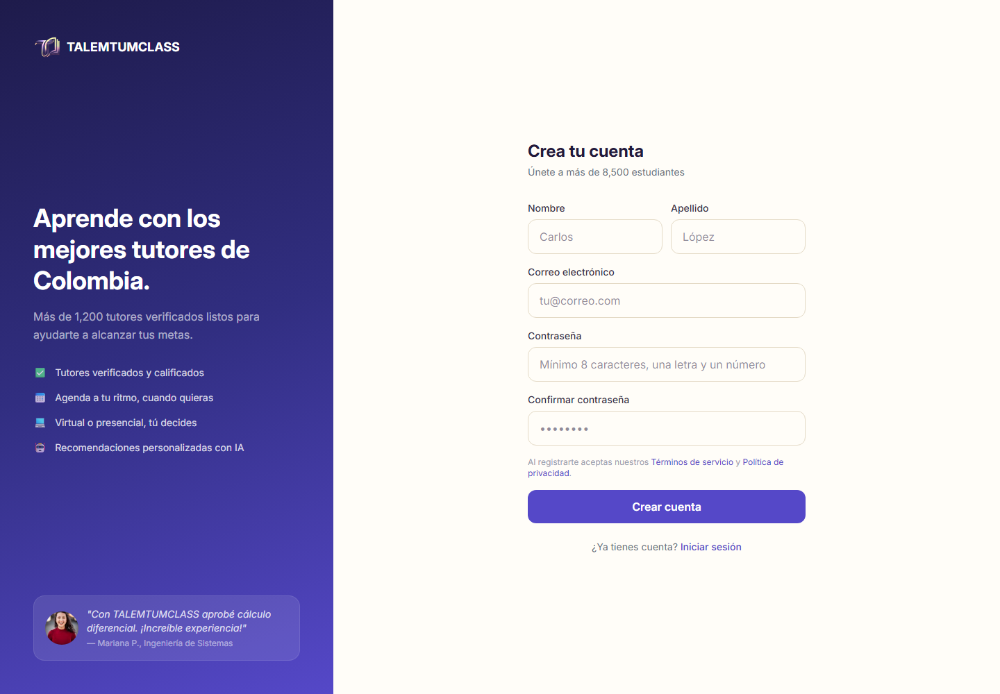
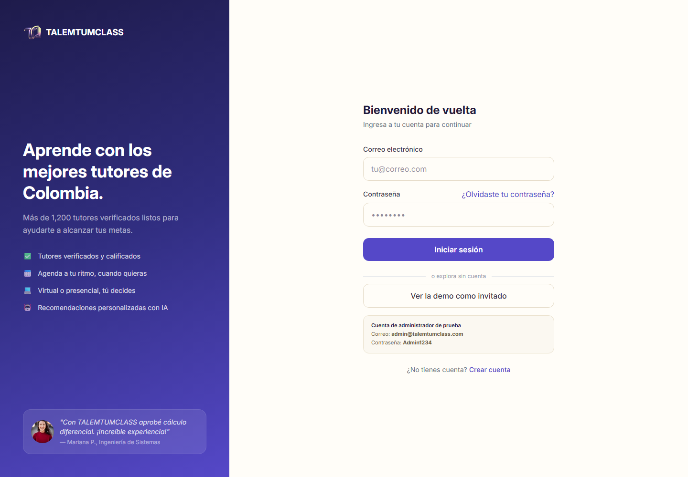
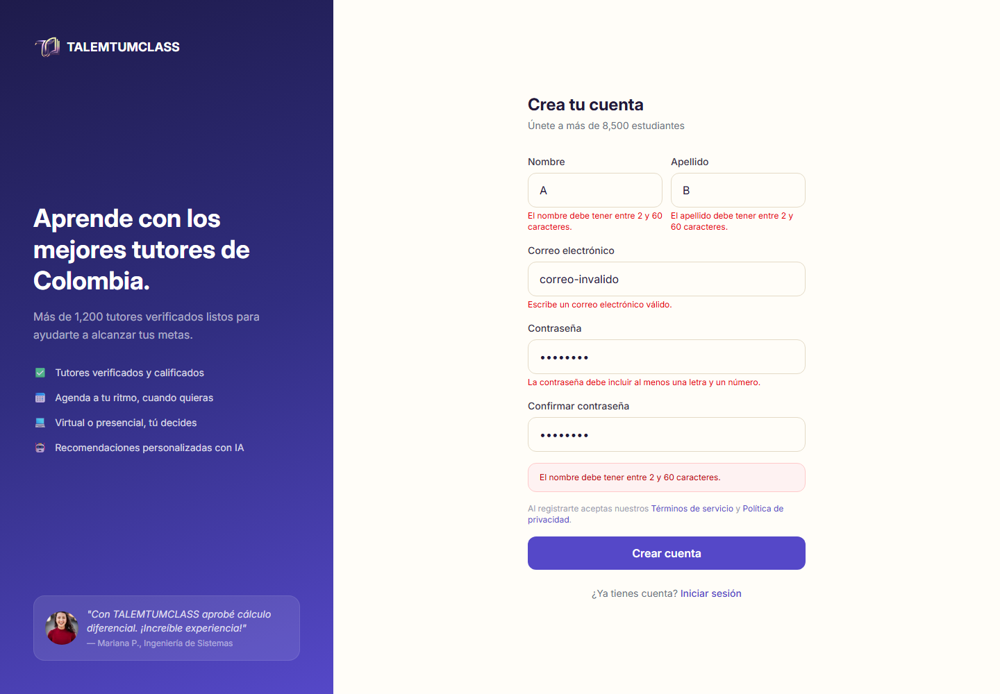
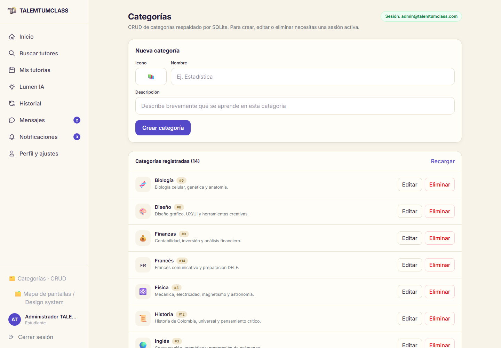
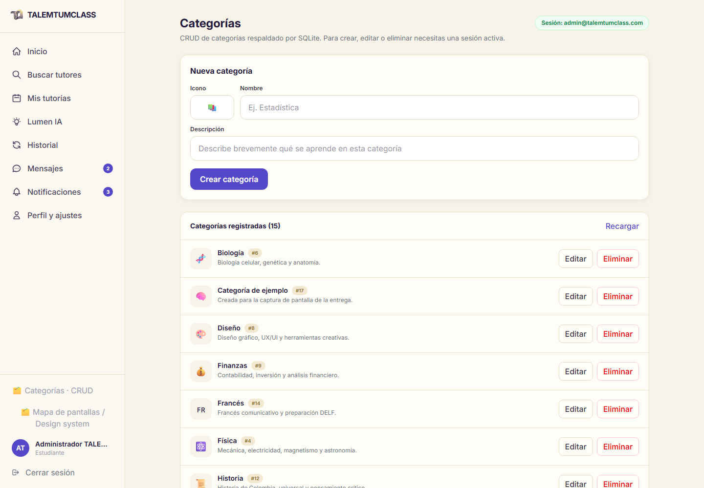
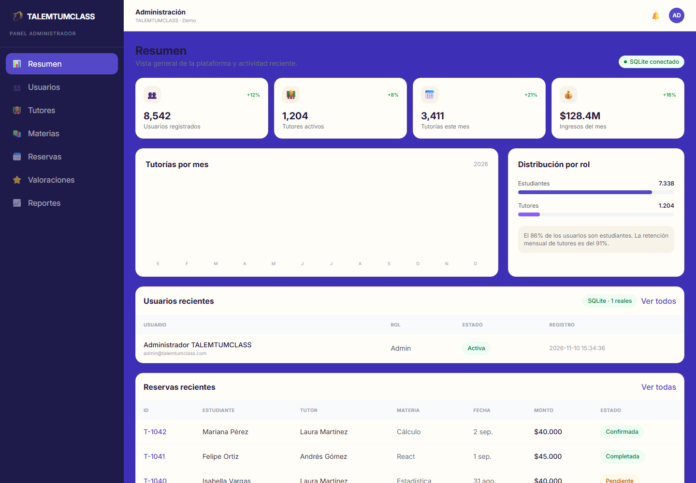

Implementación de una tabla de usuarios, formulario de registro, inicio de sesión con validaciones y CRUD de categorías protegido por sesión.
Agregar al proyecto una funcionalidad completa de usuarios y autenticación, inspirada en el CRUD de categorías visto en clase, de modo que una persona pueda:
| Capa | Tecnología | Uso en esta funcionalidad |
|---|---|---|
| Frontend | React 19 + TypeScript + Vite | Formularios de registro/login, validaciones visuales, pantalla CRUD y manejo de sesión. |
| Estilos | Tailwind CSS 4 | Interfaz premium en marfil, violeta y dorado. |
| Backend | Node.js + Express | API REST de autenticación, usuarios y categorías. |
| Base de datos | SQLite (node:sqlite) | Tablas usuarios, sesiones y categorias. |
| Seguridad | node:crypto | Hash scrypt de contraseñas, tokens aleatorios y cookies httpOnly. |
Navegador (React)
│ fetch /api/auth/* y /api/categorias
▼
Servidor Express (server/index.js)
│ valida datos, verifica sesión y aplica reglas
▼
SQLite (database/talentumclass.db)
├─ usuarios
├─ sesiones
└─ categoriasLa clave de Gemini y la base de datos permanecen siempre en el servidor. El navegador solo recibe la cookie de sesión httpOnly.
usuarios| Campo | Tipo | Regla |
|---|---|---|
id | INTEGER | Clave primaria autoincremental. |
nombre | TEXT | Obligatorio, 2–60 caracteres. |
apellido | TEXT | Obligatorio, 2–60 caracteres. |
email | TEXT | Único, sin distinguir mayúsculas, hasta 160 caracteres. |
password_hash | TEXT | Hash scrypt con sal aleatoria. Nunca texto plano. |
rol | TEXT | estudiante, tutor o admin. |
ciudad | TEXT | Opcional. Editable desde el perfil. |
telefono | TEXT | Opcional. Se guarda desde el perfil. |
biografia | TEXT | Opcional, hasta 500 caracteres. |
creado_en | TEXT | Fecha de registro automática. |
ultimo_acceso | TEXT | Se actualiza en cada login. |
sesionesGuarda el hash SHA-256 del token de sesión, el usuario y la fecha de expiración. El token original solo vive en la cookie del navegador. Las sesiones vencidas se eliminan automáticamente.
categorias| Campo | Tipo | Regla |
|---|---|---|
id | INTEGER | Clave primaria. |
nombre | TEXT | Único, 2–60 caracteres. |
descripcion | TEXT | Hasta 240 caracteres. |
icono | TEXT | Emoji o símbolo de la categoría. |
creado_en / actualizado_en | TEXT | Auditoría básica. |
El formulario de registro está en #/register. Al enviarlo, el frontend llama a POST /api/auth/register y el servidor ejecuta estas comprobaciones:
Los errores se muestran debajo de cada campo y en un resumen general. Si todo es correcto, se crea el usuario, se abre una sesión y se pasa a la selección de rol.
// server/index.js
app.post('/api/auth/register', authRateLimit, async (req, res) => {
const { errors, data } = validateRegistration(req.body)
if (errors.length) return validationError(res, errors)
const existing = db.prepare('SELECT id FROM usuarios WHERE email = ?').get(data.email)
if (existing) return res.status(409).json({ code: 'EMAIL_IN_USE', ... })
const passwordHash = await hashPassword(data.password)
const result = db.prepare(`
INSERT INTO usuarios (nombre, apellido, email, password_hash, rol, ciudad)
VALUES (?, ?, ?, ?, ?, ?)
`).run(data.nombre, data.apellido, data.email, passwordHash, data.rol, data.ciudad)
const { token } = createSession(Number(result.lastInsertRowid))
setSessionCookie(req, res, token)
res.status(201).json({ user: publicUser(user) })
})#/login.scrypt y timingSafeEqual.sesiones y envía una cookie httpOnly, SameSite=Lax, con 7 días de vigencia.GET /api/auth/me al cargar para recuperar la sesión.// server/auth.js — hash de contraseña
export async function hashPassword(password) {
const salt = randomBytes(16)
const derived = await scrypt(password, salt, 64, { N: 16384, r: 8, p: 1 })
return `scrypt$16384$8$1$${salt.toString('hex')}$${derived.toString('hex')}`
}
// Cookie de sesión
res.setHeader('Set-Cookie', [
`talentum_session=${token}`,
'Path=/', 'HttpOnly', 'SameSite=Lax', 'Max-Age=604800'
].join('; '))La pantalla #/categories implementa las cuatro operaciones del CRUD:
| Operación | Método y ruta | Protección |
|---|---|---|
| Listar | GET /api/categorias | Público |
| Crear | POST /api/categorias | Sesión requerida |
| Editar | PUT /api/categorias/:id | Sesión requerida |
| Eliminar | DELETE /api/categorias/:id | Sesión requerida |
Si no hay sesión, el listado sigue visible pero el formulario y los botones de edición/eliminación se ocultan y aparece un aviso con accesos directos a login y registro. El servidor también rechaza cualquier escritura sin sesión, por lo que la protección no depende solo de la interfaz.






# 1. Instalar dependencias (solo la primera vez)
npm install
# 2. Configurar variables de entorno
# Copia .env.example a .env y completa GEMINI_API_KEY si usarás Lumen IA.
# 3. Arrancar frontend + API
npm run dev
# 4. Abrir en el navegador
http://localhost:5173/#/registeradmin@talemtumclass.comAdmin1234.env con ADMIN_EMAIL y ADMIN_PASSWORD antes de publicar.
La base de datos se crea sola en database/talentumclass.db. Para reiniciar los datos, detén el servidor, elimina ese archivo y vuelve a iniciar: se recrean las 14 categorías iniciales y el administrador.
| Prueba | Resultado |
|---|---|
| Registro con datos válidos | 201 · usuario creado y sesión iniciada |
| Registro con correo repetido | 409 · mensaje “Este correo ya está registrado” |
| Registro con nombre/apellido inválidos | 400 · errores por campo |
| Registro con correo inválido | 400 · “Escribe un correo electrónico válido” |
| Contraseña corta o sin número | 400 · regla de contraseña explicada |
| Contraseñas que no coinciden | Error mostrado antes de enviar |
| Login con contraseña incorrecta | 401 · mensaje genérico |
| Login con credenciales válidas | 200 · cookie httpOnly y sesión activa |
| Crear/editar/eliminar categoría con sesión | 201 / 200 / 204 · cambios reflejados en la interfaz |
| Crear categoría sin sesión | 401 · operación rechazada por el servidor |
| Cerrar sesión | Cookie eliminada y formulario CRUD oculto |
| TypeScript y build de producción | npm run typecheck y npm run build sin errores |
| Recurso | Enlace |
|---|---|
| Repositorio público de GitHub | Completar antes de publicar: https://github.com/<usuario>/TALEMTUCLASS |
| Despliegue de la aplicación | Completar después del despliegue (Render, Railway, Fly.io, etc.) |
| Documento PDF | Este archivo |
La aplicación pasó de tener un login simulado a un flujo real de usuarios con persistencia en SQLite. La separación entre frontend, API y base de datos permite mantener la seguridad de las credenciales, validar tanto en cliente como en servidor y proteger el CRUD de categorías con una sesión verificada.
Como siguientes pasos se recomienda restringir la escritura de categorías al rol admin, añadir recuperación de contraseña por correo y migrar a PostgreSQL si la aplicación se publica con varios usuarios concurrentes.